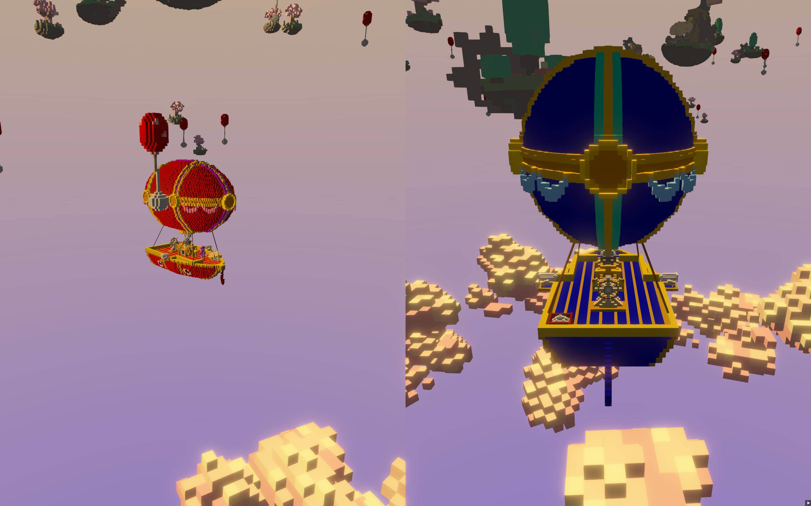

A smaller update focused on performance, physics stability and better options for lower end machines.
New 0.6 Features
This blog post covers the most important changes, but you can check out the full changelog in our repository.
On the Engine
Physics with Warm-Starting
Continuing the work from the previous release, we finished warm-starting for our physics simulation. Warm-starting uses the information stored in the contact manifold between two bodies, especially the total impulses applied to each contact point in the previous frame, and applies it before solving begins. It works based on the assumption that the impulses applied in the previous frame are a good estimate for the impulses that will also be applied in the current frame. Therefore, by applying them to the body before solving the collision constraint, the body should already be closer to its ideal position. Over time, these impulses will stabilize (since our solver is a "dirty" solver), resulting in less jitter. This is particularly effective for stacks of bodies, where the bodies push against each other, creating instability. However, if they're already closer to their ideal position, this instability will be reduced. With warm-starting, we can stack more bodies, and when the stack isn't fully stable, it stays together for longer.
Here you can see how, in our complex physics sample, the stack holds for much longer than before, although it still falls in the end.

However, if we increase our physics update rate to 60 times per second (rather than our current 30), and the substeps performed in each update to 8 (instead of our current 4), we can see that a stack of 8 blocks holds mostly stable.

Unfortunately, our collisions are not optimized to the point where we can have 60 updates per second with many bodies, but the door is open for this upgrade in the future!
Toggleable SSAO and Resolution Scale
Some time ago, we profiled Cubos's graphics engine to determine the main performance bottlenecks. SSAO stood out as the graphics plugin that took the most frame time. However, due to the way the rendering pipeline was implemented, disabling it to get better performance wasn't possible without breaking rendering altogether. Starting with this release, the SSAO component can be removed from a render target to disable this feature.
In addition, we found that other game engines often default to rendering SSAO textures at half the width/height of the screen resolution, which greatly improves performance without major loss in quality. To implement this, we added a resolution scale option to the SSAO component, which defaults to 0.5, but can be set to any value up to 2.0.
Conditional Shader Compilation
Another major bottleneck in the graphics renderer is the render picker, which allows finding out which entity is visible at a given pixel. As explained in the Modular Renderer section of the 0.2 blog post, we attempted to mitigate performance loss with Pixel Buffers and double-buffering. But despite this, it remains a demanding feature.
Just like what happened with SSAO, disabling the render picker wasn't possible. Unlike the former, though, this one required the ability
to change shaders' source code at runtime. To solve this, we added new methods to the Shader
class to prepend #define macros and recompile the shader.
auto vs = vsAsset->shaderStage(); // unmodified shader vs = vsAsset->builder().with("RENDER_PICKER").build(); // shader with #define RENDER_PICKER vs = vsAsset->builder().with("MAX_CSM_SPLITS", "5").build(); // shader with #define MAX_CSM_SPLITS 5
Unfortunately, the actual ability to toggle render picking didn't make it to this release, but it should make it to the next one!
On the Core
Added Frustum geometry and intersection utilities
A new geometry object was added, the frustum, and additionally, two new intersection functions to check if a box or a capsule intersects a frustum. This new geometry utility will be useful for frustum culling in a future release, potentially improving graphics performance when rendering large scenes with Cubos.
New Demo Sneak Peek
We have been working on a new game made with Cubos, and we're excited to share a sneak peek with you! It's a competitive multiplayer game where you and your team pilot an airship and fight against other teams. We plan to implement networked multiplayer, allowing you to play with friends online — this will be a first for Cubos! Stay tuned for more details after the 0.7 release blog post!
Next Steps
In the next release, which should be out by the end of April, we're planning to work on the following features:
- A menu bar and a sensible default layout for Tesseratos.
- A proper scene editor for Tesseratos.
- Automated inertia computation for arbitrary voxel shapes.
- Frustum culling when rendering.
- Various other performance improvements in the renderer.
- Better integration of mouse input with the high-level input system.
- And many other new features and bug fixes!
In the meantime, we'll also be participating in the Azul Jam, a game jam happening over the weekend of March 28nd. We're excited to see what we can come up with in just 48 hours! A blog post about our experience will be published sometime after the jam.
You can check out the full list of things we want to get done in the milestone for the next release.